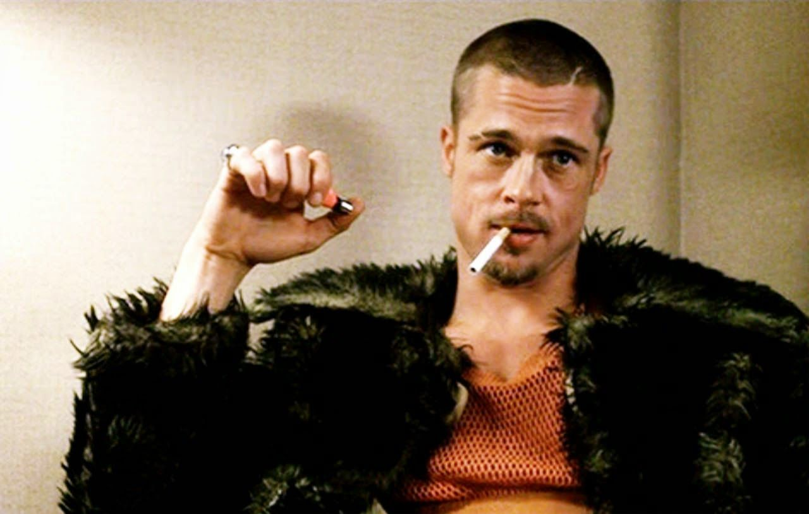

Brad Pitt plays an interesting role in Fight Club, acting out one of The narrators personalities and helps drive the story into chaos by making him quit is job and create a dedicated cult to help bring change in the city. Brad Pitt is a good cast for the role as his great physique and intelligence show the narrator what Tyler hopes and aspires to be throughout.
Edward Norton plays the narrator and the story is shot from his perspective so we can see how he is clueless to events happening around him due to his insomnia. The audience sides with this character and Norton has he tries to rebel and get out of his usual mundane life cycle that is making him depressed.
Helena's role as marla singer is to hang around both Tyler and the Narrator and to show to the audience that their is something off in their relationship as a group. Tyler acts the closest with her which makes the narrator jealous but he realises by the end that it was just him and her all along.
Here is a interview of the two stars answering questions about the Fight Club events: